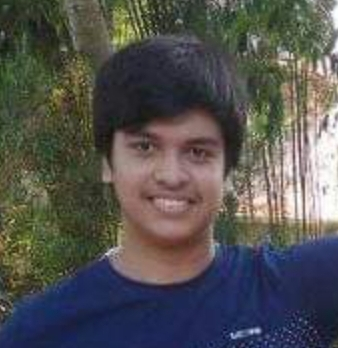
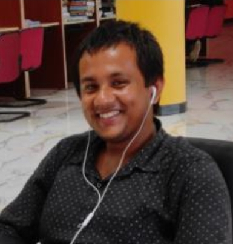
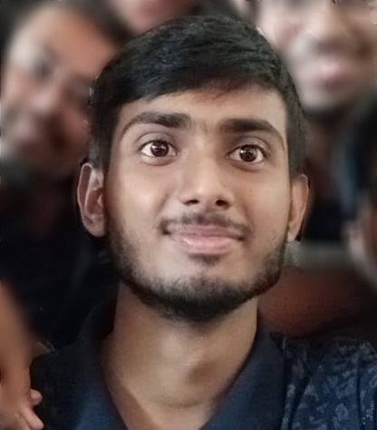
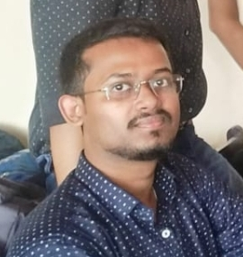
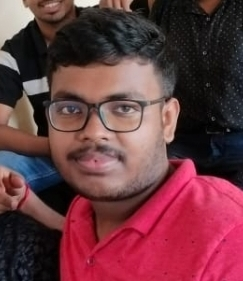
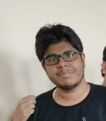
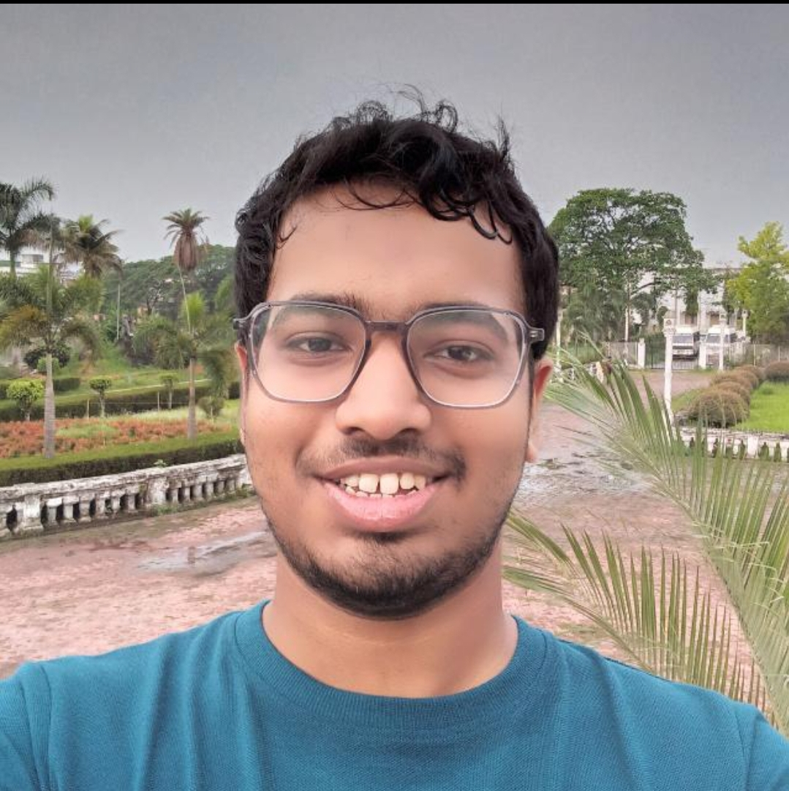
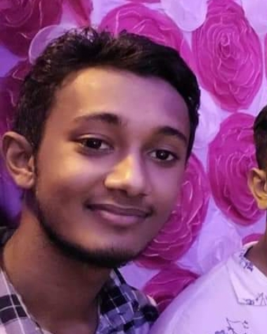
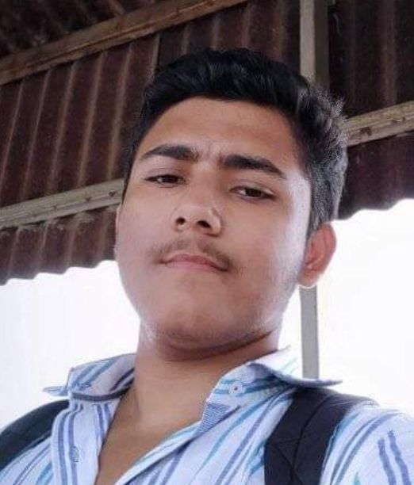
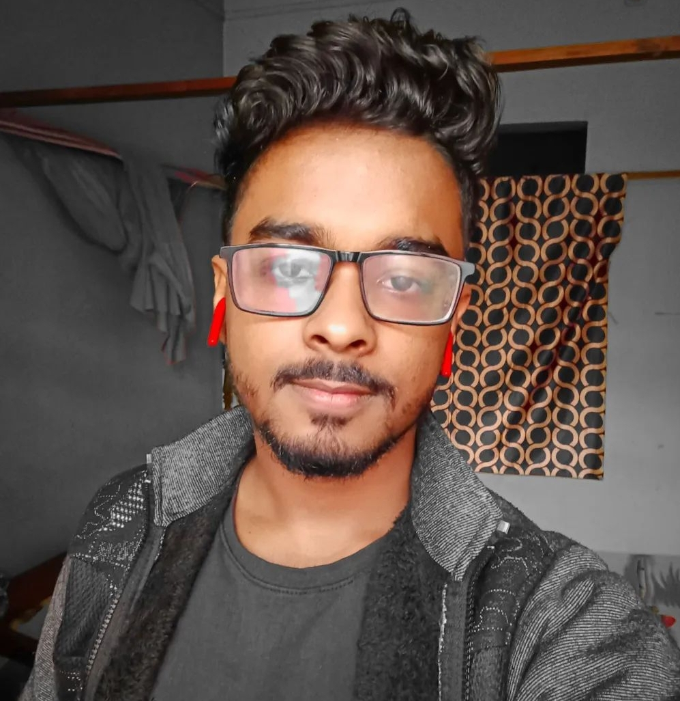

"The very sense of determination doesn't lie upon you,
until you really make it one day"
- Arkajit Karmakar
INTRODUCTION
The OGs of Section J is a WhatsApp Group full of people of variety in views sticking with each other by a common thread of
Friendship which we acquired by investing our time with each other from our 1st year Online Days 15th December and Offline
Days from 18th April.
AN ARTICLE BY THE FOUNDER - ARGHYA PAITYA
Starting from the popular one Abhradip always busy on his phone and the one who has all the info of what's happening in the
college campus.
Biprajit too is also popular among all and always love to savour his Kichoori in his red tiffin box loves to play cricket live
or in Parijat's phone Virtually is also good in academics too.
Moving to another Academically successful duo Arkajit and Ankan.... Arkajit is a fellow of SKM school who has dead fear of Lift
and prefer to use stairs is also allergic to girls as he fears Girls can make a complain against him if he gets closer to
them...Ankan is a much brilliant one who loves Roman Reigns and is a cricket and WWE lover also enjoy a good reputation with
him and is a much savior of us in exam times in Classes.
Then comes our Parijat and Yuvraj both are just the cutest while Yuvraj prefers to speak Hindi though he knows Bengali is not
quite familiar with Bengali words much Parijat is the one you can have all the fun with tease him or company him to tease
others you would have a great time with him...If you are trapped with them one day You would have fun with both but Yuvraj can
give you more educational lecture so be aware.
At the end let's introduce you to the most chilled ones of the OGs Ananda and Sayan while Ananda loves Virat Kohli and an RCB
fan so you can easily how determined and passionate he is also he would be providing you with funny contents which can make
your day(any type of content to precise) Sayan is a much cute one who is the one you can readily go and talk to both as said
are the ones you can have all the chill with hence girls you may contact them.
And Last but not the least is me Arghya what to say about me I'm the one with whom you can talk about anything with whom you
can share anything without any hesitation and second thoughts So all are welcome to have a chat with me.
MEMBERS OF THIS GROUP

Arghya Paitya
(Founder)

Parijat Das
(Co-Founder)

Arkajit Karmakar
(Speaker)

Ankan Deb
(President)

Biprajit Deb
(Chief Secretary)

Yuvraj Chowhan
(Chairman)

Abhradip Saha
(Member)

Ananda Muhuri
(Member)

Sayan Chakraborty
(Member)

Sankha Sarkar
(Member)
Prasenjit Debnath
(Member)
Abhishek Debnath
(Member)
Raj Sarkar
(Dean of OGs' Welfare)
Mention Your Problems Below In This Box :-
For getting notified with the latest notices of our college :-
Thanks For Visiting
Section J Forever
Divided By Branches, United By A Section